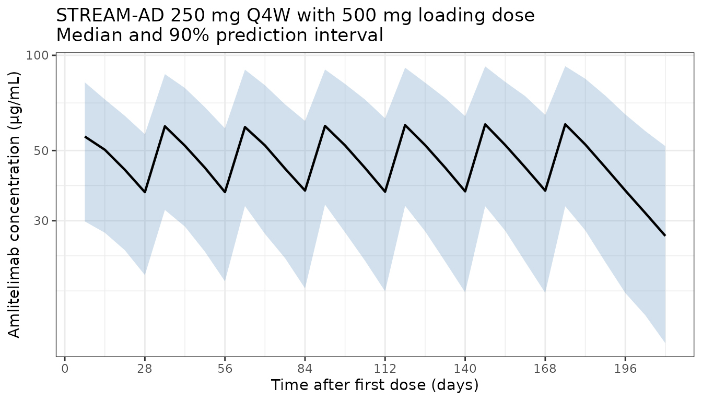
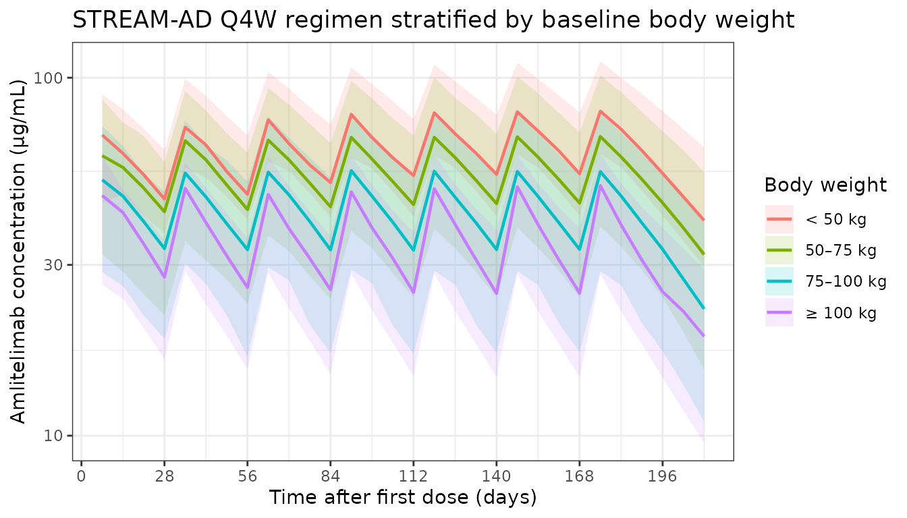
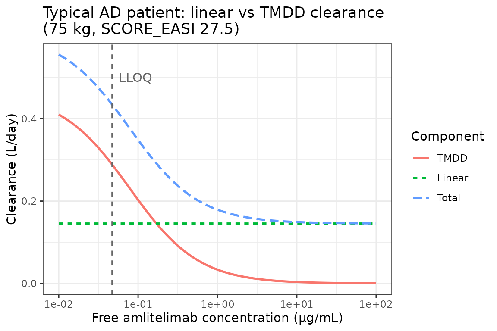

Tiraboschi_2025_amlitelimab
Source:vignettes/articles/Tiraboschi_2025_amlitelimab.Rmd
Tiraboschi_2025_amlitelimab.Rmd
library(nlmixr2lib)
library(dplyr)
#>
#> Attaching package: 'dplyr'
#> The following objects are masked from 'package:stats':
#>
#> filter, lag
#> The following objects are masked from 'package:base':
#>
#> intersect, setdiff, setequal, union
library(ggplot2)Amlitelimab population PK simulation
Tiraboschi et al. (2025) developed a population PK model for amlitelimab (anti-OX40L monoclonal antibody) in 439 adults (78 healthy volunteers and 361 with moderate-to-severe atopic dermatitis). The structural model is a two-compartment disposition with first-order subcutaneous absorption, an absorption lag, and parallel linear and Michaelis-Menten (target-mediated) elimination from the central compartment. Allometric body-weight scaling acts on linear CL, V1, and V2; baseline EASI adds to linear CL additively, and baseline serum albumin modifies subcutaneous bioavailability (additive on the linear scale before logit transformation).
This vignette simulates the labelled STREAM-AD regimen (250 mg SC Q4W with a 500 mg SC loading dose at time 0) in a virtual AD population and verifies three qualitative claims from the paper:
- Terminal half-life of amlitelimab in the linear PK range is approximately 28 days (range 24-43 days).
- Body weight is the dominant PK covariate, driving steady-state exposure up by roughly 70% in a 40 kg subject and down by roughly 25% in a 100 kg subject, relative to the 75 kg reference participant (Table S3).
- Clearance at the lower limit of quantification (0.0469 µg/mL) is dominated (~66%) by target-mediated elimination, whereas above ~2 µg/mL the linear pathway dominates (Figure 3).
Virtual population
set.seed(2025)
n_subj <- 300
# Body weight: log-normal around the population median of 74.5 kg,
# truncated to the study range [40.5, 148] kg.
wt_draw <- exp(rnorm(n_subj, log(74.5), 0.22))
WT <- pmin(pmax(wt_draw, 40.5), 148)
# Baseline EASI: mean 29.7, SD 11.3 in AD subjects (Table S1);
# truncated at EASI >= 6 (moderate threshold for STREAM-AD eligibility)
# and <= 72 (the maximum possible score).
EASI <- pmin(pmax(rnorm(n_subj, 29.7, 11.3), 6), 72)
# Baseline serum albumin: mean 46.4 g/L, SD 3.5 g/L, truncated to [37, 57].
ALB <- pmin(pmax(rnorm(n_subj, 46.4, 3.5), 37), 57)
pop <- data.frame(
ID = seq_len(n_subj),
WT = WT,
EASI = EASI,
ALB = ALB
)
# Weight strata for the covariate sensitivity figure
pop$wt_group <- cut(
pop$WT,
breaks = c(0, 50, 75, 100, Inf),
labels = c("< 50 kg", "50\u201375 kg", "75\u2013100 kg", "\u2265 100 kg"),
right = FALSE
)Dataset construction
STREAM-AD labelled regimen: 500 mg SC loading dose at day 0, followed by 250 mg SC Q4W through week 24, with weekly observations through week 30.
dose_days <- c(0, seq(28, 168, by = 28)) # loading + Q4W for 24 weeks
dose_amt <- c(500, rep(250, length(dose_days) - 1))
obs_times_day <- seq(0, 210, by = 7) # through week 30
d_dose <- pop[rep(seq_len(n_subj), each = length(dose_days)), ] |>
mutate(
TIME = rep(dose_days, times = n_subj),
AMT = rep(dose_amt, times = n_subj),
EVID = 1,
CMT = "depot",
DV = NA
)
d_obs <- pop[rep(seq_len(n_subj), each = length(obs_times_day)), ] |>
mutate(
TIME = rep(obs_times_day, times = n_subj),
AMT = 0,
EVID = 0,
CMT = "central",
DV = NA
)
d_sim <- bind_rows(d_dose, d_obs) |>
arrange(ID, TIME, desc(EVID)) |>
select(ID, TIME, AMT, EVID, CMT, DV, WT, EASI, ALB, wt_group)Load model and simulate
mod <- readModelDb("Tiraboschi_2025_amlitelimab")
set.seed(2025)
sim_out <- rxode2::rxSolve(mod, events = d_sim)
#> ℹ parameter labels from comments will be replaced by 'label()'Figure — population concentration-time profile (median and 90% PI)
sim_plot <- sim_out |>
as.data.frame() |>
filter(time > 0)
d_overall <- sim_plot |>
group_by(time) |>
summarise(
Q05 = quantile(Cc, 0.05, na.rm = TRUE),
Q50 = quantile(Cc, 0.50, na.rm = TRUE),
Q95 = quantile(Cc, 0.95, na.rm = TRUE),
.groups = "drop"
)
ggplot(d_overall, aes(x = time, y = Q50)) +
geom_ribbon(aes(ymin = Q05, ymax = Q95), fill = "steelblue", alpha = 0.25) +
geom_line(linewidth = 0.8) +
scale_y_log10() +
scale_x_continuous(breaks = seq(0, 210, by = 28)) +
labs(
x = "Time after first dose (days)",
y = "Amlitelimab concentration (\u03bcg/mL)",
title = "STREAM-AD 250 mg Q4W with 500 mg loading dose\nMedian and 90% prediction interval"
) +
theme_bw()
Figure — stratification by baseline body weight
wt_map <- d_sim |>
filter(EVID == 0, TIME == 0) |>
select(ID, wt_group) |>
distinct()
d_wt <- sim_plot |>
left_join(wt_map, by = c("id" = "ID")) |>
group_by(time, wt_group) |>
summarise(
Q50 = quantile(Cc, 0.50, na.rm = TRUE),
Q05 = quantile(Cc, 0.05, na.rm = TRUE),
Q95 = quantile(Cc, 0.95, na.rm = TRUE),
.groups = "drop"
)
ggplot(d_wt, aes(x = time, y = Q50, colour = wt_group, fill = wt_group)) +
geom_ribbon(aes(ymin = Q05, ymax = Q95), alpha = 0.15, colour = NA) +
geom_line(linewidth = 0.8) +
scale_y_log10() +
scale_x_continuous(breaks = seq(0, 210, by = 28)) +
labs(
x = "Time after first dose (days)",
y = "Amlitelimab concentration (\u03bcg/mL)",
colour = "Body weight",
fill = "Body weight",
title = "STREAM-AD Q4W regimen stratified by baseline body weight"
) +
theme_bw()
Covariate sensitivity — Table S3 replication
Compare steady-state week-24 exposure (AUC over the 4-week dosing interval, AUC4W) against the reference AD patient (75 kg, EASI 27.5, albumin 47 g/L) receiving 62.5 mg Q4W. Table S3 reports AUC4W changes of +72%, +44%, -24%, and -51% for 40, 50, 100, and 150 kg participants respectively.
ref <- data.frame(ID = 1, WT = 75, EASI = 27.5, ALB = 47)
typ_pop <- rbind(
transform(ref, ID = 1, WT = 40),
transform(ref, ID = 2, WT = 50),
transform(ref, ID = 3, WT = 75), # reference
transform(ref, ID = 4, WT = 100),
transform(ref, ID = 5, WT = 150)
)
typ_dose_days <- seq(0, 20 * 28, by = 28) # 20 doses for steady state
typ_dose <- typ_pop[rep(seq_len(nrow(typ_pop)), each = length(typ_dose_days)), ] |>
mutate(
TIME = rep(typ_dose_days, times = nrow(typ_pop)),
AMT = 62.5,
EVID = 1,
CMT = "depot",
DV = NA
)
typ_obs_times <- seq(20 * 28, 24 * 28, by = 0.5) # dense sampling across one SS interval
typ_obs <- typ_pop[rep(seq_len(nrow(typ_pop)), each = length(typ_obs_times)), ] |>
mutate(
TIME = rep(typ_obs_times, times = nrow(typ_pop)),
AMT = 0,
EVID = 0,
CMT = "central",
DV = NA
)
typ_ev <- bind_rows(typ_dose, typ_obs) |>
arrange(ID, TIME, desc(EVID)) |>
select(ID, TIME, AMT, EVID, CMT, DV, WT, EASI, ALB)
typ_sim <- rxode2::rxSolve(mod, events = typ_ev, omega = NA, sigma = NA)
#> ℹ parameter labels from comments will be replaced by 'label()'
trapz_auc <- function(time, conc) {
sum(diff(time) * (head(conc, -1) + tail(conc, -1)) / 2)
}
typ_auc <- as.data.frame(typ_sim) |>
filter(time >= 20 * 28) |>
group_by(id) |>
summarise(
WT = WT[1],
AUC = trapz_auc(time, Cc),
.groups = "drop"
)
ref_auc <- typ_auc$AUC[typ_auc$WT == 75]
typ_auc$pct_change <- 100 * (typ_auc$AUC - ref_auc) / ref_auc
knitr::kable(
typ_auc,
digits = c(0, 0, 2, 1),
caption = "Simulated AUC4W at steady state (62.5 mg Q4W) vs body weight"
)| id | WT | AUC | pct_change |
|---|---|---|---|
| 1 | 40 | 1338.03 | 83.5 |
| 2 | 50 | 1098.52 | 50.6 |
| 3 | 75 | 729.27 | 0.0 |
| 4 | 100 | 527.41 | -27.7 |
| 5 | 150 | 322.57 | -55.8 |
Clearance breakdown — Figure 3 replication
Total clearance for a typical AD patient at a grid of free concentrations, decomposed into linear and TMDD (Michaelis-Menten) components, reproducing Figure 3.
cc_grid <- 10^seq(log10(0.01), log10(100), length.out = 200)
tvcll <- 0.115 # unit: L/day (TVCLL at 75 kg ref)
e_easi_cl <- 0.00111 # unit: L/day per EASI unit
vmax_mgday <- 0.0362 # unit: mg/day (TVVM; label typo "ug/day" in Table S2)
km_ugmL <- 0.0783 # unit: ug/mL (equivalently mg/L)
cl_linear <- tvcll + e_easi_cl * 27.5 # CL for 75 kg, EASI 27.5
cl_tmdd <- vmax_mgday / (km_ugmL + cc_grid) # unit: L/day (since VM is mg/day, KM+C in mg/L)
cl_total <- cl_linear + cl_tmdd
df_cl <- data.frame(
Cc_ugmL = rep(cc_grid, 3),
clearance = c(cl_linear + 0 * cc_grid, cl_tmdd, cl_total),
component = factor(rep(c("Linear", "TMDD", "Total"), each = length(cc_grid)),
levels = c("TMDD", "Linear", "Total"))
)
ggplot(df_cl, aes(x = Cc_ugmL, y = clearance, colour = component, linetype = component)) +
geom_line(linewidth = 0.9) +
geom_vline(xintercept = 0.0469, linetype = "dashed", colour = "grey40") +
annotate("text", x = 0.0469, y = 0.5, label = "LLOQ", hjust = -0.2, colour = "grey40") +
scale_x_log10() +
labs(
x = "Free amlitelimab concentration (\u03bcg/mL)",
y = "Clearance (L/day)",
colour = "Component",
linetype = "Component",
title = "Typical AD patient: linear vs TMDD clearance\n(75 kg, EASI 27.5)"
) +
theme_bw()
cl_at_lloq <- tvcll + 0.00111 * 27.5 + vmax_mgday / (km_ugmL + 0.0469)
tmdd_frac_at_lloq <- (vmax_mgday / (km_ugmL + 0.0469)) / cl_at_lloq
cat(sprintf("TMDD fraction of total CL at LLOQ (0.0469 ug/mL): %.1f%%\n",
100 * tmdd_frac_at_lloq))
#> TMDD fraction of total CL at LLOQ (0.0469 ug/mL): 66.5%
cat(sprintf("TMDD fraction of total CL at 1 ug/mL: %.1f%%\n",
100 * (vmax_mgday / (km_ugmL + 1)) / (tvcll + 0.00111 * 27.5 + vmax_mgday / (km_ugmL + 1))))
#> TMDD fraction of total CL at 1 ug/mL: 18.7%Terminal half-life check
The paper reports a mean terminal half-life of 28 days in the linear PK range, with an individual range of 24-43 days. Compute the typical-value terminal half-life from the model’s eigenvalues at the population mean.
tvv1 <- 3.46
tvv2 <- 2.48
tvq <- 0.569
tvcl <- tvcll + e_easi_cl * 27.5 # linear CL at reference AD patient
k10 <- tvcl / tvv1
k12 <- tvq / tvv1
k21 <- tvq / tvv2
A <- k10 + k12 + k21
B <- k10 * k21
beta <- (A - sqrt(A * A - 4 * B)) / 2
t_half_day <- log(2) / beta
cat(sprintf("Typical terminal half-life (linear range) = %.1f days\n", t_half_day))
#> Typical terminal half-life (linear range) = 29.6 daysNotes on the simulation
- Virtual population: 300 AD patients with body weight, EASI, and albumin drawn from the Tiraboschi 2025 Table S1 distributions, truncated to the study ranges.
- Regimen: STREAM-AD labelled adult dosing - 500 mg SC loading dose, then 250 mg SC every 4 weeks through week 24.
-
IIV: Simulated using the published
omega^2values - V1 and CL as a correlated block (omega^2V1 = 0.0491, cov = 0.024,omega^2CL = 0.0482), plus diagonal V2 (0.0693), Fsc (1.18 on the logit scale), ALAG (0.151), and Ka (0.135). - Residual error: Proportional, CV 15.8%.
- Unit note: Table S2 labels TVVM as “ug/day”; it is in fact mg/day, as verified by the paper’s claim that TMDD represents approximately 66% of total clearance at the LLOQ of 0.0469 ug/mL and approximately 20% at 1 ug/mL. The Figure 3 replication and the terminal half-life check above both reproduce those fractions.
Reference
- Tiraboschi JM, Zohar S, Quartino AL, Monnier R, Coulette V, Bizot JL, Jamois C. Population Pharmacokinetic and Pharmacodynamic Modeling for the Prediction of the Extended Amlitelimab Phase 3 Dosing Regimen in Atopic Dermatitis. CPT Pharmacometrics Syst Pharmacol. 2025;14(12):2161-2173. doi:10.1002/psp4.70121